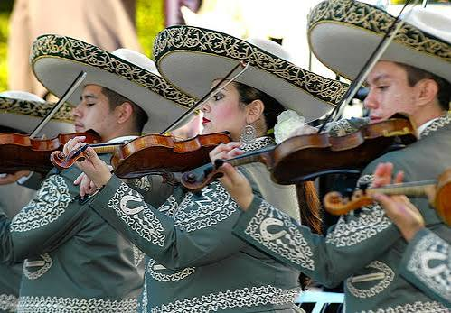

EL MARIACHI Y LA MUSICA TRADICIONAL

El mariachi y la música tradicional de
Jalisco representan uno de los símbolos
culturales más importantes de México,
reconocidos como Patrimonio Cultural
Inmaterial de la Humanidad por la UNESCO en 2011.
- Origen e Historia
- Cuna del género: Nació en el siglo XVIII y principios
del siglo XIX en las comunidades rurales del estado
de Jalisco —especialmente en municipios como Cocula y
Tecalitlán—, además de zonas de Michoacán, Colima y Nayarit.
- Evolución: Surgió de la mezcla entre instrumentos de cuerda
traídos por los españoles e influencias rítmicas locales.
Durante el siglo XX, se profesionalizó en Guadalajara,
incorporó la trompeta y adoptó el icónico traje de charro.
- Instrumentos y Formación
- Mariachi tradicional: Integrado por instrumentos
de cuerda y percusión como el violín, la vihuela,
la guitarra de golpe, el guitarrón, el arpa y la tambora.
- Mariachi moderno: Añade secciones de trompetas,
violines adicionales, vihuela y guitarrón, con cuatro o más integrantes.
- Géneros Musicales Tradicionales
- Son jalisciense: Caracterizado por su ritmo alegre,
armonía, zapateado por parejas y letras costumbristas
(ejemplos clásicos incluyen La Negra y Las Alazanas).
- El jarabe: Una suite musical que enlaza diversos sones
y aires regionales, destacando el histórico Jarabe Tapatío.
- Repertorio general: Incluye rancheras, corridos, valses,
polkas y cumbias que narran historias de amor, naturaleza,
religión y fervor patriótico.
AVERY CORAL GUZMAN GONZALEZ, 3AP, PROGRAMACION